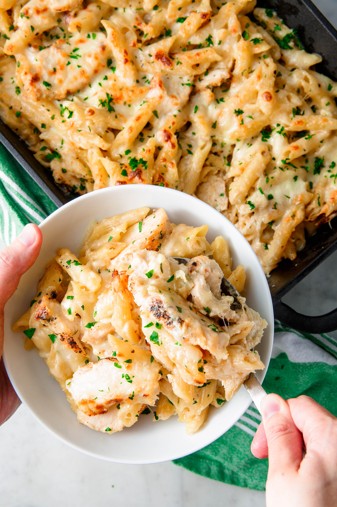

Description
Think of this as a creamier baked ziti. Penne tossed with creamy alfredo sauce, chicken, and (a lot) of mozzarella — need we say more?
Ingredients
- 1 lb. penne
- 4 tbsp. butter, plus more for greasing baking dish
- 2 tbsp. extra-virgin olive oil
- 1 lb. boneless skinless chicken breasts
- 1 tsp. Italian seasoning
- Kosher salt
- Freshly ground black pepper
- 2 cloves garlic, minced
- 4 tbsp. all-purpose flour
- 3 c. half-and-half
- 1/2 c. freshly grated Parmesan
- 1 c. shredded mozzarella
- 1/4 c. freshly chopped parsley
Directions
- In a large pot of salted boiling water, cook pasta according to package directions until al dente. Drain immediately and set aside.
- Preheat oven to 350° and butter a large 9"-x-13" baking dish. In a large skillet over medium heat, heat oil. Season both sides of chicken with Italian seasoning, salt, and pepper. Add to skillet and cook until chicken is cooked through, 8 minutes per side. Remove chicken and wipe the skillet clean. Let chicken rest for 5 minutes before slicing crosswise.
- Make sauce: Return skillet over medium heat and melt butter. Add garlic and cook until garlic is fragrant, about 30 seconds. Whisk in flour and cook until the mixture is bubbling and golden, 1 minute more. Gradually pour in half-and-half, whisking constantly.
- Bring mixture to a simmer and stir in Parmesan. Let simmer until sauce thickens, 1 minute, then season with salt and pepper.
- In a large bowl, combine pasta, chicken, and alfredo sauce. Spread about half of the pasta mixture on the bottom of the baking dish, then sprinkle with half of the mozzarella. Add the remaining pasta mixture and top with more mozzarella. Bake until cheese is melty, about 15 minutes.
- Garnish with parsley before serving.
Go to homepage
Go to top